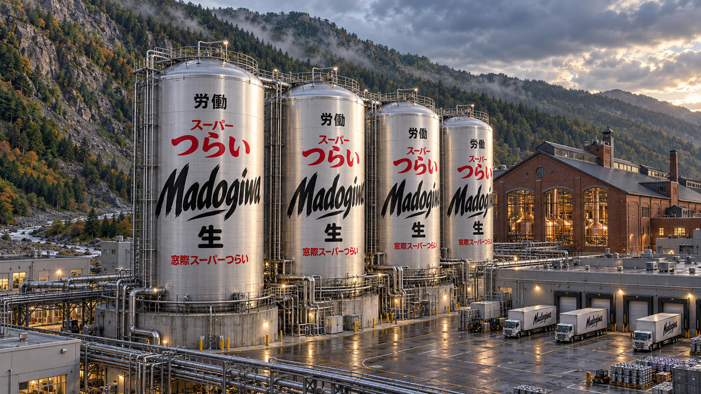
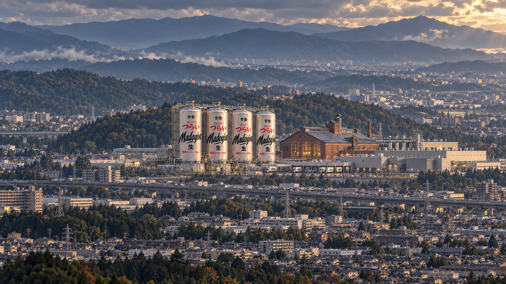
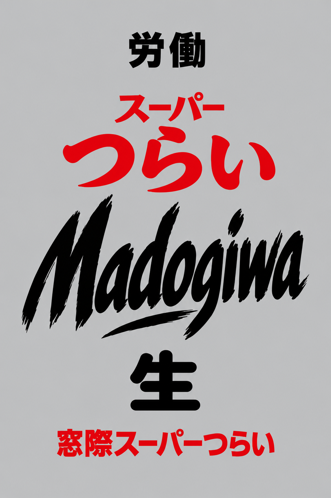

工場デザイン

1672 × 941 · 工場・タンクの外観正本候補。4基、銀地に標準缶意匠。
工場デザイン＋6場面の参照画像。画像をクリックすると原寸を開きます。動画は未生成です。

1672 × 941 · 工場・タンクの外観正本候補。4基、銀地に標準缶意匠。

1672 × 941 · 人物・構図候補。ビルへの映り込みは反射として扱う。

1672 × 941 · 現行。そば屋を映さず、遠方の街と工場を超望遠で見る。

1672 × 941 · 動作前の姿勢参照。

1672 × 941 · 雲・質感の候補。ポーズは飛行に見えるため動作参照には使わない。工場の位置・無地のタンクはコピーしない。

1672 × 941 · 工場を残し、山を崩して止まる構図候補。

1672 × 941 · 両手保持の演技候補。追加文字・上端の見切れ・工場左右配置は正本にしない。ラベルは標準缶と工場を優先。

平面再制作。標準缶を銘柄の正本として併用。